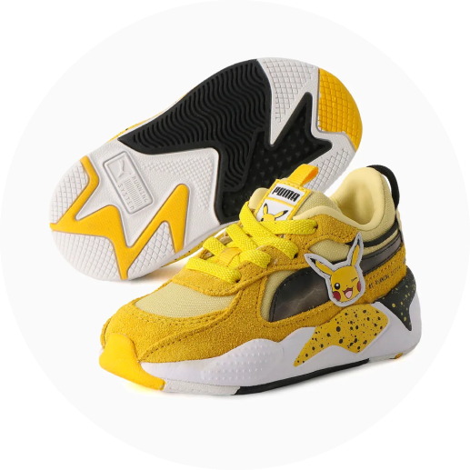
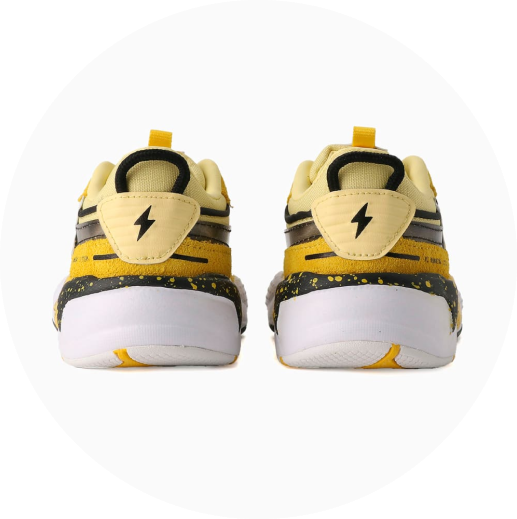

A coleção PUMA X POKÉMON se inspira em alguns dos Pokémon mais icônicos, e aproveitamos algumas de suas características mais marcantes para infundir um pouco do DNA Pokémon no tênis RS-X. Cores chamativas, gráficos marcantes, e detalhes inspirados no adorável Pikachu - você encontra tudo aqui. Será que você vai conseguir caçar todos eles?


Detalhes:
- Cabedal em nylon e suede
- Entressola de PU
- Sola de borracha
- Tira com fecho de contato ajustável
- Faixa PUMA Formstrip lenticular com raio nas laterais